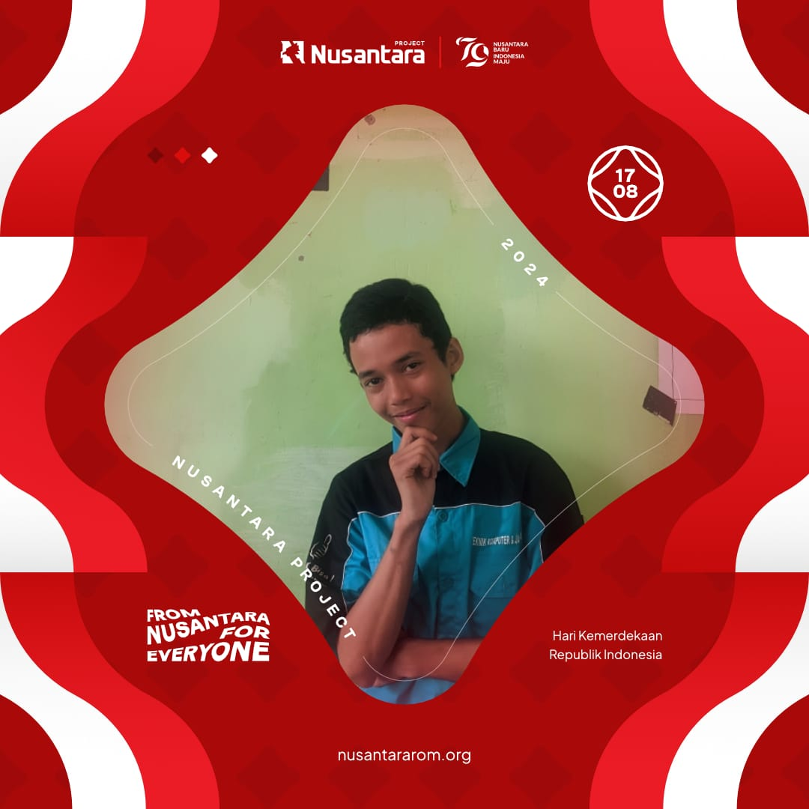

This portfolio is designed for the best experience on mobile devices. Please view on your smartphone to enjoy full animations and layout.

ZF
'">
Hello, I'm Zhyllan Fyllah 👋
A Computer and Network Engineering student passionate about learning Android Native and Apache Cordova development. Focused on writing clean code, optimizing performance, and growing every day. 🚀
Aspiring Developer Android Native Apache Cordova Open Source
I am currently exploring mobile application development through two primary paths:
• Native Android: Java/Kotlin, Android SDK, Gradle build system
• Hybrid with Cordova: HTML/CSS/JavaScript with custom plugin integration
My goal is to build lightweight, maintainable applications while continuously improving my technical skills. Progress over perfection. 💪
Location & Status
📍 Ujunggading, Lembah Melintang, West Sumatra, Indonesia
🎓 Student of Computer and Network Engineering — SMK N 1 Lembah Melintang (2025–Present)
🐧 Active contributor in LINUX UBUNTU Indonesia & Nusantara Project ROM communities
SKILLS
Technical Skills
Android Native
Apache Cordova
Java / Kotlin
JavaScript
HTML5 / CSS3
Cordova Plugins
Git & GitHub
Continuous Learning
JOURNEY
Learning Journey
Education
SMK N 1 Lembah Melintang
Computer & Network Engineering • 2025 – Present
Studying computer networking, Linux systems, Android development fundamentals, and building small-scale projects.
SMP Tahfidz Al-Qur'an An-Naajiya
Simpang Empat • 2021 – 2025
Developed interest in technology, assisted with computer lab maintenance, and began exploring basic programming concepts.
Communities & Projects
Nusantara Project ROM
Contributor • 2020 – Present
Participating in Android custom ROM testing, feature documentation, and user support activities.
LINUX UBUNTU Indonesia
Active Member • 2021 – Present
Engaging in technical discussions, troubleshooting sessions, and knowledge sharing about Linux system administration.
Personal Cordova Projects
Experiment • 2024 – Present
Building hybrid mobile applications, experimenting with custom plugin integration, and learning Play Store deployment workflows.